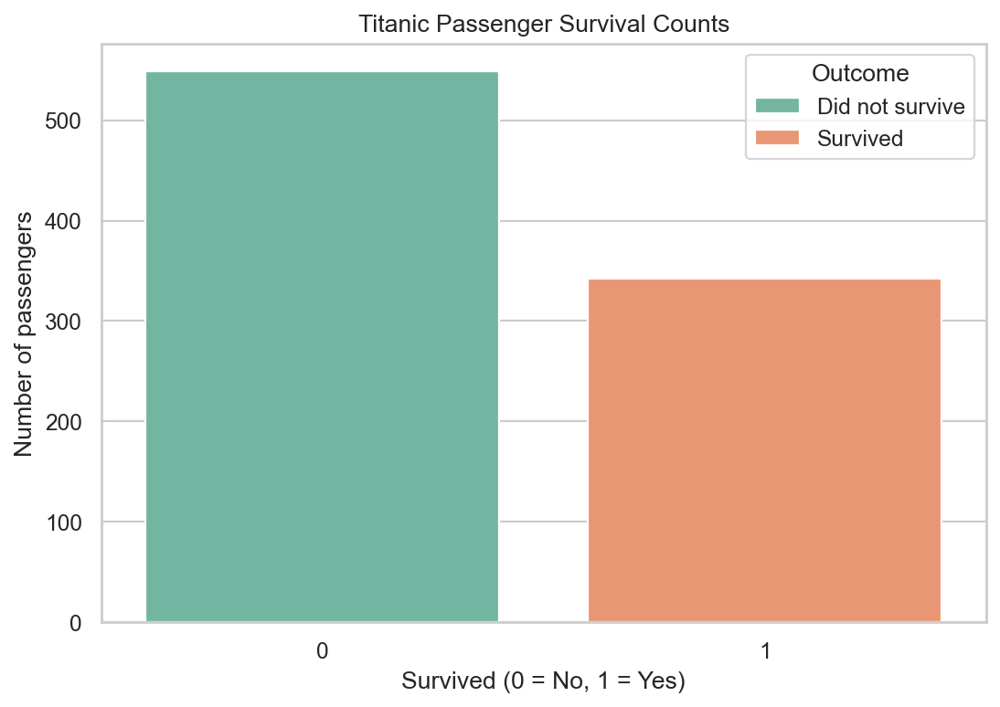
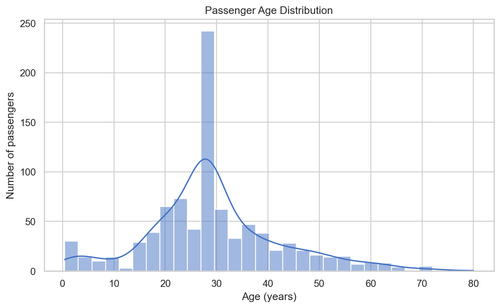
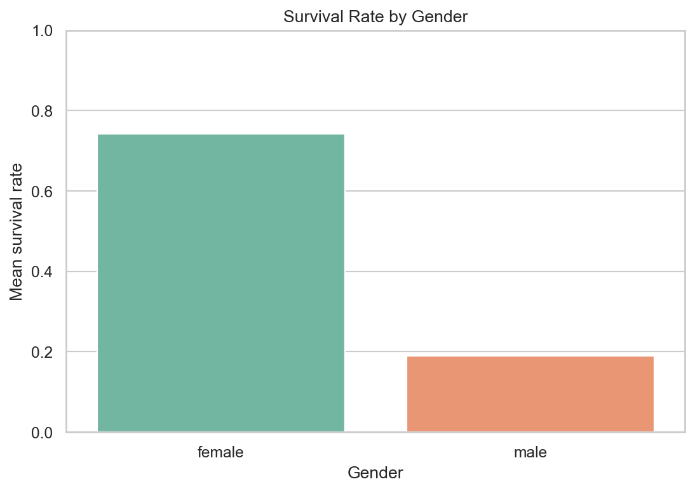
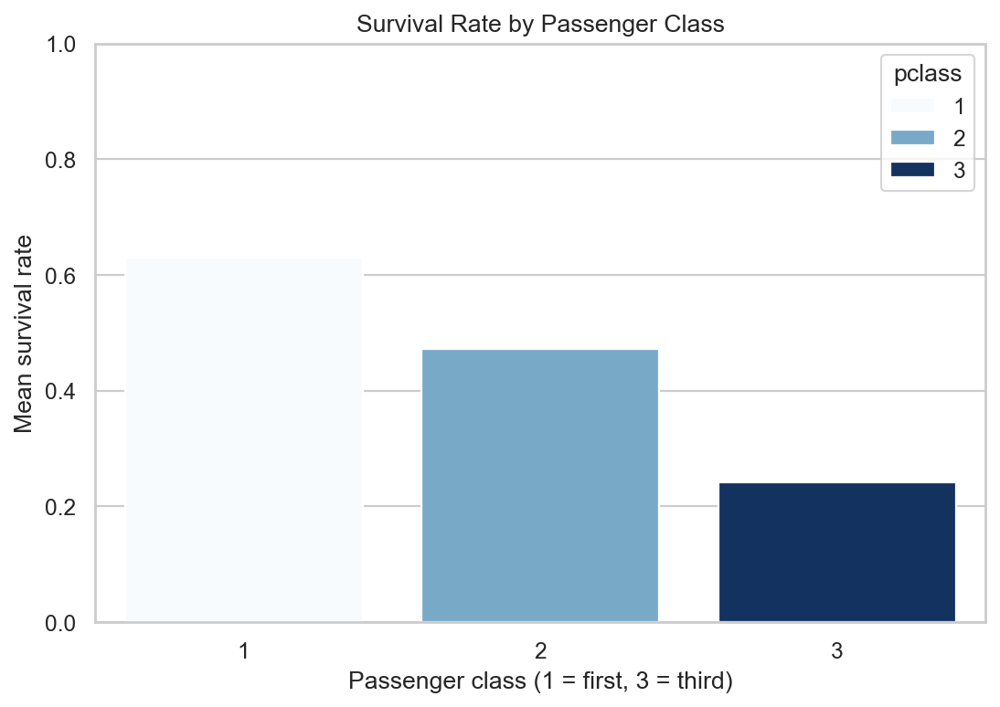
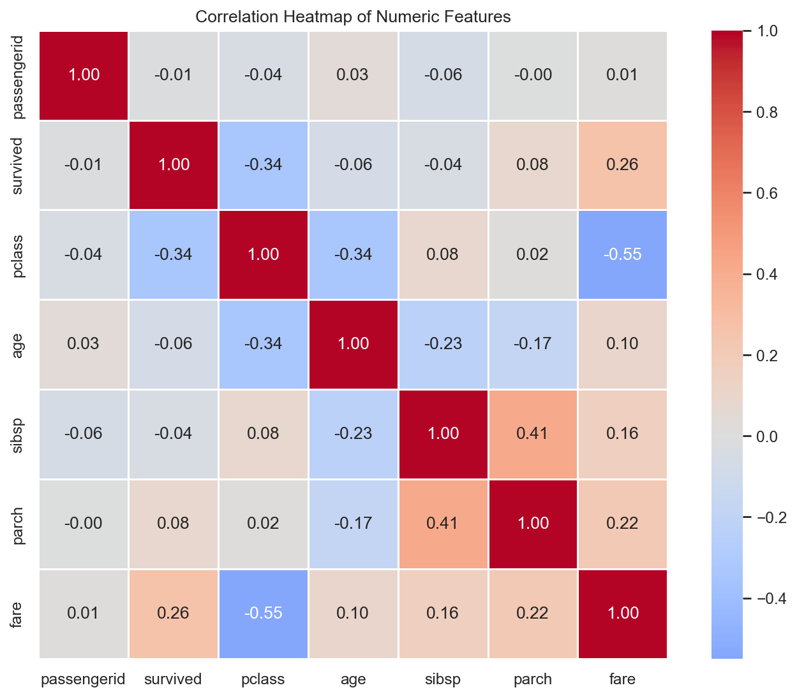
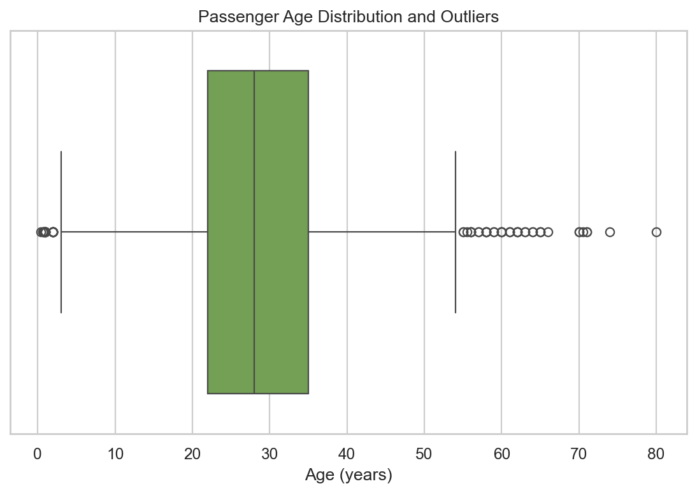

Data science · Exploratory analysis
A voyage through
the Titanic data.
A visual overview of 891 passenger records: how the data was cleaned, what survival patterns emerged, and what the numbers can—and cannot—tell us. This dashboard presents aggregate findings, not passenger-level records.
01 · The overview
Patterns in the passenger list
The overall survival rate was 38.4%. Outcomes differed across gender and ticket class; these are associations in the records, not evidence of cause.
Survival by gender
Share of passengers in each group recorded as survivors.
Female
74.2%
Male
18.9%
A group average describes this dataset; it does not predict an individual's outcome.
Passenger class
Passenger totals and mean survival rate within each ticket class.
01
First class216 passengers
63.0%
02
Second class184 passengers
47.3%
03
Third class491 passengers
24.2%
02 · Visualizations
Let the charts tell the story
Six saved charts made with Matplotlib and Seaborn. Select an image to open it at full size.

Survival counts
How many passengers survived versus did not survive.

Age distribution
Passenger ages, with a smoothed distribution curve.

Survival by gender
Mean survival rate for female and male passengers.

Survival by passenger class
Mean survival rate across first, second, and third class.

Numeric feature correlations
Pairwise correlations between numeric columns; correlation alone does not establish cause.

Age spread
A box plot showing the median, spread, and potential outliers.
A note on the data
Explore thoughtfully
Missing ages and embarkation ports were filled before plotting. The source has no missing fares, and cabin information is still missing for many passengers. Data cleaning choices affect how a chart should be interpreted. This dashboard does not provide a passenger-level data download.
03 · Findings
What stood out
These figures are calculated from the included Titanic training dataset after the documented cleaning steps.
38.4% survived. 342 of the 891 passengers in this dataset were recorded as survivors.
Survival rates differed by gender. 74.2% for female passengers and 18.9% for male passengers.
First class had the highest observed survival rate. 63.0%, compared with 47.3% in second and 24.2% in third.
Third class had the most passengers: 491 of the 891 records.
Median age after imputation was 28 years. The missing ages were filled with the dataset's median.
Average fare was highest in first class: $84.15. Overall average fare was $32.20.
Port C had the highest observed survival rate among recorded embarkation ports: 55.4%.
Average age was about 29.7 years before cleaning; female average age was 27.9 and male average age was 30.1.
177Age values missing · filled
2Embarked values missing · filled
0Fare values missing
687Cabin values missing · left as-is
04 · Method
From raw CSV to clear results
A simple, reproducible workflow using the project’s Python tools.
01 · Inspect
Pandas reads the CSV and reveals its rows, columns, data types, descriptive statistics, missing values, and duplicate records.
02 · Clean
Exact duplicate rows are removed. Missing ages and fares use their medians; missing embarkation ports use the mode. No Fare values were missing in this source.
03 · Explore
Group-by summaries and six saved charts compare survival, gender, class, age, fare, and embarkation patterns.
One dataset. Many useful questions.
Pandas helped organize and summarize passenger records; NumPy supported numerical calculations; and Matplotlib and Seaborn turned comparisons into visual summaries. The results are descriptive patterns from a historical dataset—not causal claims or predictions.